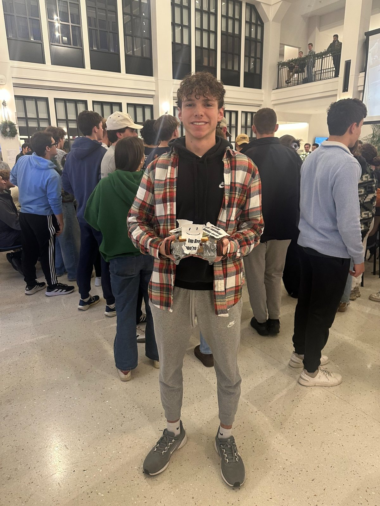

Course project
CompletedBread — Class Beetlebot
Beater-bar robot · Class weapons division

Overview
Bread was my first completed combat robot: a bread-themed, 3 lb robot built for a classroom competition in Mechanical Engineering Analysis and Design. Working with a three-person team, I helped develop the design, troubleshoot the electrical system, source improved components, and drive the robot to the weapons-division championship match.
My contribution
I served as lead project designer and driver, designed and wired the control system, and operated Bread during competition. I also worked with our teaching assistant, Sam, to troubleshoot the wiring and coordinated with Jason, the machine shop head, to obtain improved drivetrain components and fabricate a metal spinning weapon.
Recovering from an underpowered drivetrain
Our team received materials late in the project, and our initial motors and wiring required substantial troubleshooting. I worked with Sam to resolve wiring issues, but the original drivetrain still struggled to move the fully assembled robot.
To move the project forward, I coordinated with Jason to obtain replacement motors and battery packs. The improved drivetrain transformed Bread’s performance, giving us enough pushing power to control opponents during competition. This experience taught me to evaluate component capability early and seek technical support before a hardware limitation consumes the build schedule.
Designing within the available resources
We chose cardboard bodywork because it was quick to fabricate and modify within the class schedule. Butter knives served as front wedges to get underneath opponents, inspiring the sliced-bread appearance.
Because weapon components were not supplied, I coordinated with the machine shop to fabricate a metal spinning weapon and adapted an available motor to drive it. This allowed Bread to compete in the weapons division, although its weapon had limited damaging capability.
The design prioritized ease of fabrication and pushing performance. Competition exposed the tradeoffs: the body offered limited protection, and the exposed weapon motor was vulnerable to impacts.
Competition performance
Bread competed in a three-robot weapons division within a class of approximately 14 teams.
Opening match: We could push and control an opponent, but a stronger spinning weapon ultimately knocked our weapon off and defeated Bread.
Repair and recovery: Between matches, we secured the damaged assembly and restored the robot to its competition weight. We could not restore weapon rotation, so I adapted our driving strategy around traction, pushing power, and the arena hazards. Bread won the following round.
Championship match: Bread repeatedly pinned its opponent against the wall, limiting opportunities for the opposing weapon to engage. After several extensions, accumulated damage dislodged our batteries and ended our run.
Bread became a crowd favorite and finished as the weapons-division runner-up.
What I would improve
For a second version, I would use more durable armor, secure the batteries more effectively, and protect the weapon motor inside the chassis. I would also select and test the weapon motor earlier so its performance could guide the mechanical design.
Bread taught me that competitive performance depends on the entire system: drivetrain capability, component protection, reliable wiring, repairability, and driving strategy. I’m proud that we recovered from early setbacks and turned a constrained first build into a competitive robot.
Project gallery

